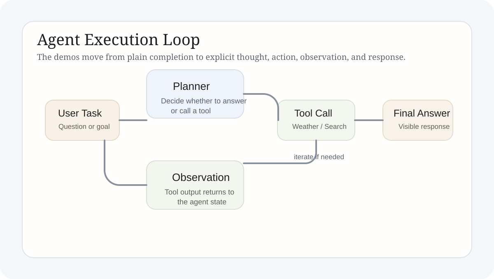

Agent 基础与 Demo
本文把工具调用、观察回路、流式响应与 ReAct 风格执行放回同一个 Agent 视角中，说明 Agent 为什么本质上是结构化执行系统，而不是更会聊天的 prompt。
Technical Explainer
Agent 的关键不在“人格更强”，而在“执行链更明确”。一旦任务被拆成思考、动作、观察和最终回答几个阶段，模型就开始从一次性生成器变成一个可以逐步做事的系统。
1. 学习主题
本文讨论的对象不是“Agent 这个词”，而是模型何时开始从回答问题转向执行任务。只要系统需要决定是否调用工具、如何读取观察结果、是否继续迭代，以及何时结束，这个系统就已经不再是普通 completion，而是一个最小执行框架。
因此，学习重点不是给模型增加更多风格，而是让步骤显式化。执行回路一旦被写清楚，系统会比纯 prompt 更容易调试、更容易扩展，也更容易定位失败到底发生在计划、工具调用还是结果整合阶段。

2. 核心原理
Agent 的核心原理可以概括为“状态化执行”。模型不再只看输入然后直接给答案，而是先判断当前是否需要外部动作，再把工具结果作为新的观察写回上下文，最后继续决策。这样一来，系统的能力就不只来自模型参数，也来自动作格式、工具接口和控制回路的设计。
ReAct 风格尤其适合作为入门框架，因为它把 Thought、Action、Observation 几个阶段显式拆开。哪怕实现还很简化，这种结构也已经足以说明 Agent 与普通聊天调用的本质差异。
动作显式化
一旦工具调用与回答生成被分开，系统行为就不再只受最终文本支配。
观察回写
工具返回值会成为下一轮决策的输入，Agent 因而具备迭代执行能力。
控制逻辑
动作格式、解析规则和停止条件往往比单条 prompt 更能决定系统是否稳定。
3. 练习实现
`draft.py` 用来练习流式输出与 reasoning-style 展示内容的分离，重点在于理解“用户看到什么”和“系统内部怎样推进”未必是同一层逻辑。`travelassistant.py` 则把工具调用、天气查询和景点搜索接入到一个简化版 ReAct 回路里，让 Thought / Action / Observation 可以连续发生。
这两段代码分别对应 Agent 的两个重要面向。前者更接近交互层，说明系统可以把执行过程拆成不同展示面。后者更接近任务层，说明工具和观察一旦被写进循环，模型就不再只是“回答器”，而是开始承担调度责任。
流式交互
`draft.py` 说明可见输出和内部执行并不一定是一回事。
工具回路
`travelassistant.py` 用天气和景点工具把最小 ReAct 结构跑了起来。
失败定位
显式动作和观察让失败可以被归因到格式、工具或状态管理，而不是只怪模型“不聪明”。
4. 当前产出
这组学习已经给出一个清晰判断：Agent 的能力主要来自流程设计，而不是抽象地“更强”。只要把动作、工具、观察和结束条件组织清楚，即使是很小的 demo，也能体现出任务执行与单轮问答的本质差异。
这也意味着，后续如果继续增加检索、状态图、记忆或外部系统接入，核心工作不会是“再写一个更大的 prompt”，而是继续把执行结构设计清楚。
5. 结论
Agent 不是更会聊天的模型壳，而是一个把推理、动作、观察和回答组织成执行循环的系统。这个视角一旦建立，后续的工具编排、工作流图和多步任务设计都会变得更容易理解。
6. 完整代码笔记
看这组源码时建议先抓住三个对象
先看动作格式
如果 Thought / Action 的边界不清楚，后面的工具调用就很难稳定。
再看工具返回
Observation 怎样写回上下文，决定了 Agent 能不能继续下一步。
最后看停止条件
一个最小 Agent 是否可控，通常取决于它何时停止而不是何时开始。
代码范围：完整渲染 `draft.py` 与 `travelassistant.py`，便于把交互层和工具层放在同一页中对照。